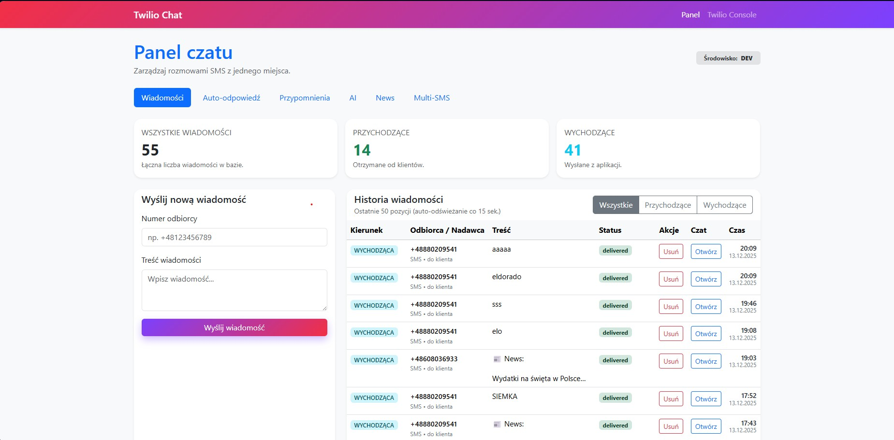
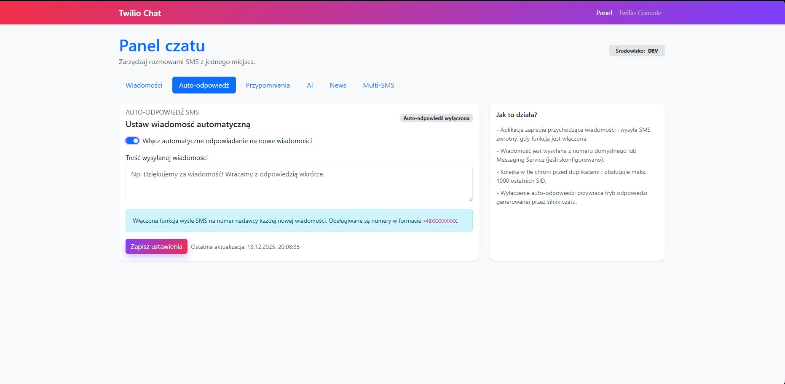
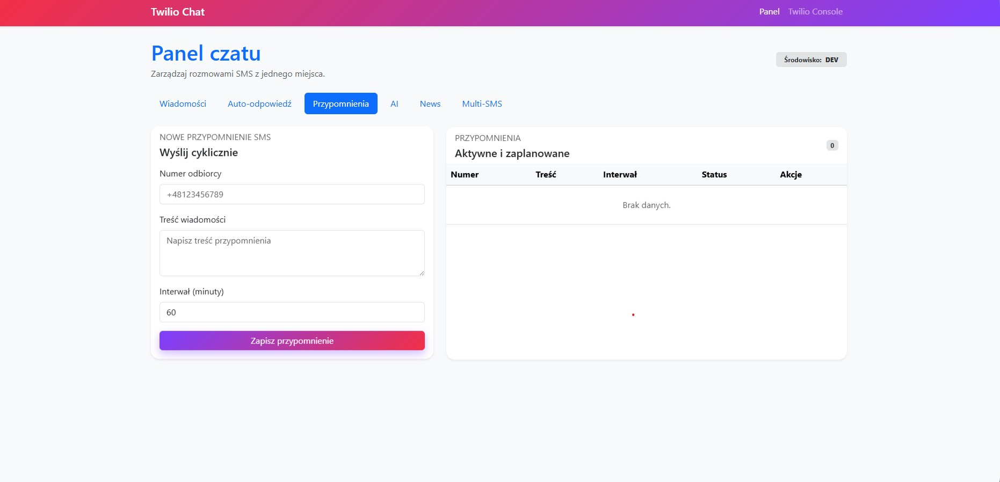
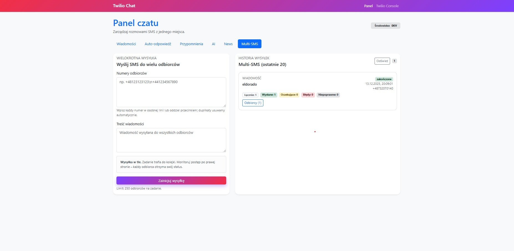
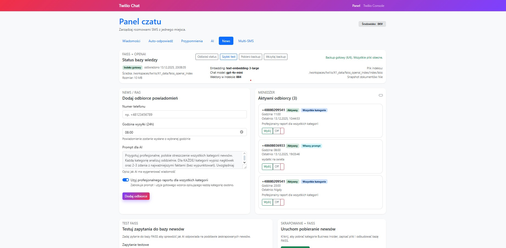
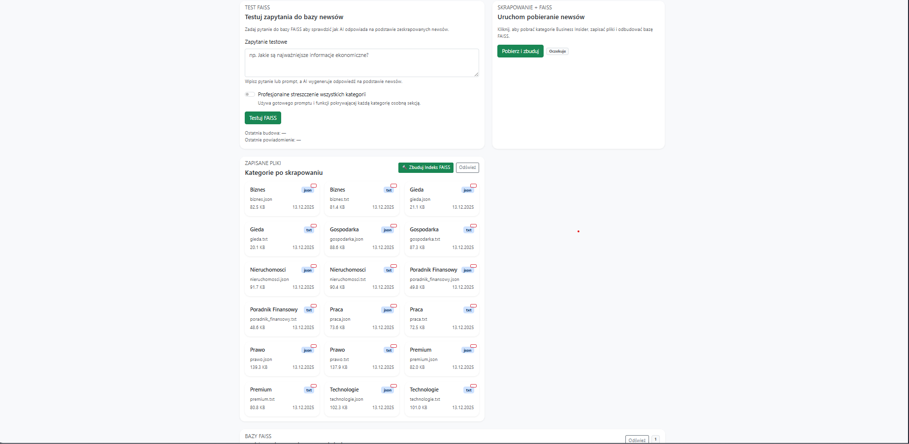
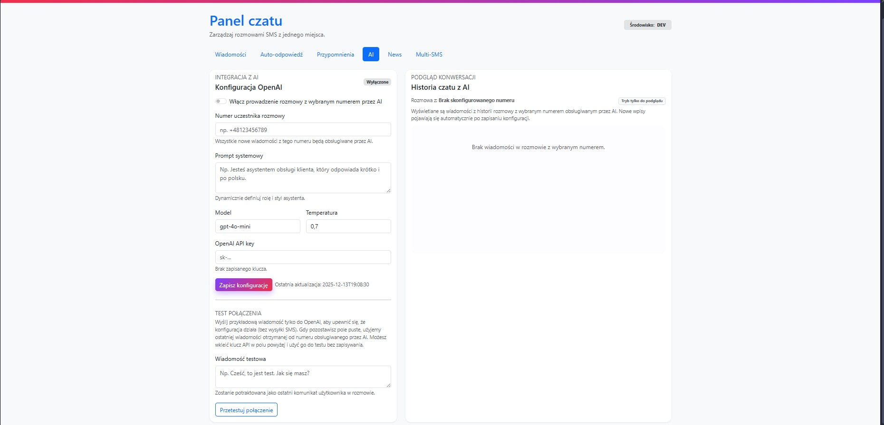

Twilio Chat App dostarcza firmom kompletny kanał komunikacji SMS/MMS z panelem operatora, automatyzacją odpowiedzi, kampaniami Multi‑SMS oraz integracją z modelami AI i modułem FAISS/RAG. Wersja 3.2.1 wprowadza nowoczesny interfejs z collapsible sidebar i compose modal dla lepszej ergonomii pracy.
Kluczowe funkcje
Webhooki Twilio i REST API
Auto‑reply (szablon) i AI auto‑reply (OpenAI)
Historia wiadomości, widok czatu i tryb AI preview
Scheduler przypomnień i broadcasty Multi‑SMS
News / FAISS / RAG – kuracja treści prosto z panelu
Nowość 3.2.2 Secrets Manager - centralne zarządzanie kluczami API
Nowość 3.2.2 Zmodernizowany czat z animowanymi dymkami
Nowość 3.2.1 Zwijany sidebar i modal kompozycji wiadomości
Nowość 3.2.2 Secrets Manager & Chat Redesign
Nowa dedykowana strona /secrets umożliwia zarządzanie kluczami API Twilio i OpenAI bezpośrednio z przeglądarki. Strona czatu została kompletnie przeprojektowana z animowanymi dymkami i ikonami statusu.
Secrets Manager: maskowanie kluczy, test połączenia, hot reload bez restartu
Przycisk "Top Secret": szybki dostęp z każdego miejsca w aplikacji
Animowane dymki: efekt bubbleIn, ikony statusu (✓ ✓✓), awatary z gradientem
Design System: spójne nagłówki, zakładki z ikonami, responsywność
Nowość 3.2.1 Collapsible Sidebar & Compose Modal
Nowy interfejs użytkownika z profesjonalnym zwijającym się menu bocznym zapewnia więcej przestrzeni roboczej. Modal kompozycji wiadomości umożliwia szybkie wysyłanie SMS bez opuszczania aktualnego widoku.
Zwijany sidebar: tryb rozwinięty (280px) z pełnymi etykietami lub tryb zwinięty (84px) tylko z ikonami
Szybkie akcje: Wyślij nową wiadomość, Historia konwersacji, Odśwież dane
Responsywność: overlay na mobile, automatyczne zwijanie na tabletach
Panel główny

Dashboard operatora: statystyki, szybka wysyłka i historia wiadomości w jednym miejscu.
Historia wiadomości
Czytelna tabela z filtrem kierunku, meta i szybkim dostępem do czatu.
Auto‑odpowiedź

Jedno miejsce do sterowania automatycznymi odpowiedziami: przełącznik ON/OFF, treść i status działania.
Przypomnienia

Kampanie cykliczne: planowanie, wstrzymywanie i przegląd historii wysyłek.
Multi‑SMS & kampanie jednorazowe

Nowość 3.1.0 Jednorazowe kampanie do wielu numerów: kolejka w tle, historia batchy, liczniki sukcesów/błędów i szczegóły per odbiorca.
News / FAISS / RAG

Moduł newsów: zarządzanie źródłami, plikami scrapów, budowa indeksu FAISS oraz testy zapytań.

Operacje w panelu: lista indeksów, stan backupu, działania administracyjne i szybkie testy RAG.
AI / Widok czatu

Integracja AI: konfiguracja modelu, test połączenia, podgląd rozmowy i kontrola trybu działania.
Generowanie PDF
Użyj funkcji „Drukuj → Zapisz jako PDF” w przeglądarce lub narzędzia wkhtmltopdf.
Screenshoty są przechowywane w katalogu app/screenshot/ i są osadzone w dokumencie jako obrazy JPG.
Wydruk do PDF: dokument jest responsywny, a w trybie druku automatycznie upraszcza tło i cienie.